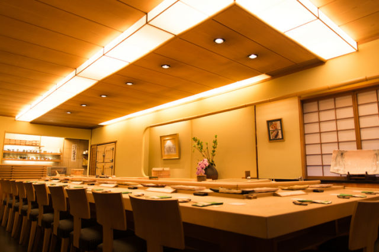
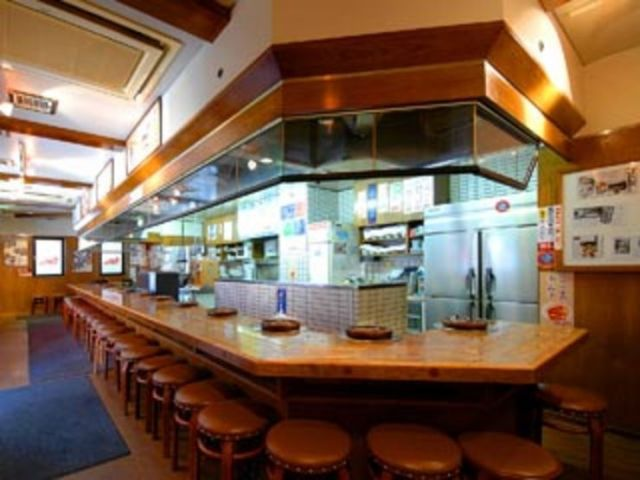
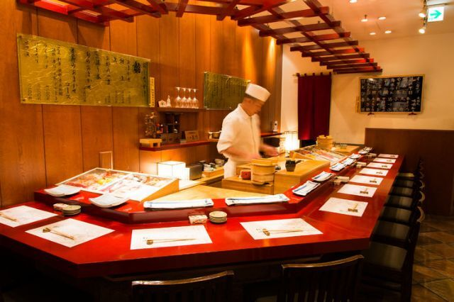
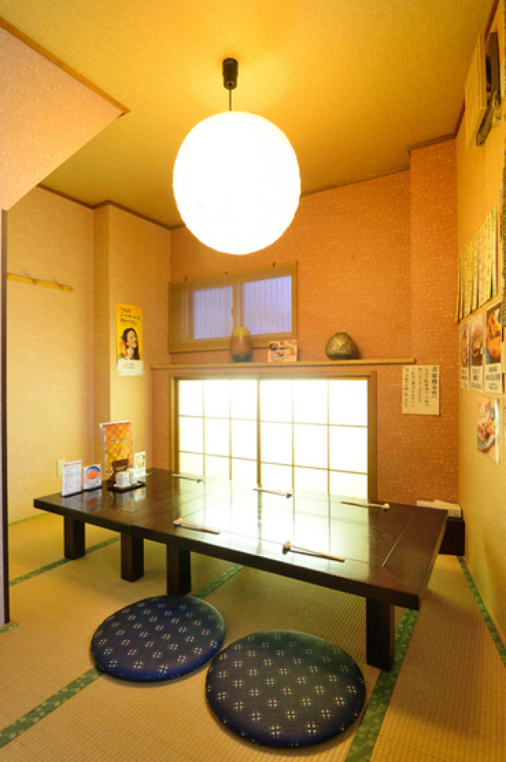

Index
__________________________
1. Wine & Western Cuisine - Clos de Soleil -
2. Sushi Zen Main Store
3. Genghis Khan Daruma 6.4
4. Oshokuji to Goenkai no Mise Kumagera
5. Hakodate Dining Gaya
6. Sushi Kyu
7. Sushi Yoshi
8. Nizakana Sashimi Shunsai Uminoshiki
9. Daichi No Megumi
10. Kirin Beer Garden Shinkan Urban Branch
__________________________
1. Wine & Western Cuisine - Clos de Soleil -

Open: [Weekdays, Saturday] 6:00 pm - 1:00 am Closed: Sunday, National Holidays Average price: [Dinner] 6,000 JPY Access: 1 minute walk from exit No.3 of the subway [Susukino Station] 2 minutes walk from exit No.3 of [Hosui Susukino Station] Address: B1F, 3rd Green Bldg., Minami 4-jo Nishi 3-chome, Chuo-ku, Sapporo city, Hokkaido
[Making tasty ingredients even tastier] is the motto of [Clos de Soleil], a restaurant quietly stands in Susukino, away from its hustle and bustle. All the decorations and art objects in the restaurant are created by the artists related to wine. They offer various western dishes from multiple countries, using ingredients from Hokkaido and French cooking techniques. The bread is made from scratch, and their desserts and butter are also hand-made as much as possible, using the local ingredients from Hokkaido as much as possible. The weekly menus with fresh seasonal ingredients and courses to your preference as much as possible are also popular. Their wide variety in the drink menu includes many wines, of course. They serve the best dishes and drinks so that you feel happy to have visited [Clos de Soleil].
2. Sushi Zen Main Store
Open: [Tuesday-Sunday, National Holidays, Before National Holidays] Lunch: 11:00am-3:00pm You can savour our special lunch-only courses. Dinner: 5:00pm-10:00pm (last order: 9:30pm) *Both Lunch and Dinner will incur a separate 10% service charge. Closed: - Average price: - Access: A 3-minute walk from exit 1 of Maruyama-koen station on the Tozai line of the Sapporo Municipal Subway Address: Kita1jo Nishi 27-chome, Chuo-ku, Sapporo-shi, Hokkaido
They pride themselves on striving for excellence throughout our many menu items. Only with raw tuna can you savor the delicious flavor and springy texture quite like this, therefore they offer fresh tuna all year round, bringing you its authentic taste. In addition, "Sushi Zen" was the pioneer of artificial salt water preservation for sea urchins, guaranteeing top quality. They pride themselves on the fresh, popping texture of salmon roe, too. In all, they think it's important to anticipate the guests' needs and to have them ready before they ask. The staff takes service seriously, and aims to treat both patrons and one another with a positive, can-do attitude. The flavor of sushi goes without saying, but they also work to create a relaxed atmosphere with high quality service. Enjoy peace of mind that your reception or business dinner will be treated to nothing but the best. The location is a convenient stop along the way to go flower-viewing at Hokkaido temple, too. They also recommend the lunch take-out option.
3. Genghis Khan Daruma 6.4
Open: 5:00 pm - 5:00 am (L.O. 4:30) *Last order is 30 minutes before closing time. Closed: None Average price: [Dinner] 2,100 JPY Access: Three minute walk from subway Nanboku Line Susukino Station. Address: Noguchi Bldg. 1F, Minami 6 Jo Nishi 4chome, Chuo-ku, Sapporo-shi, Hokkaido
Enjoy superior cuts of meat, like seasonal roast and shoulder roast that often sell out right away, together with the popular chanja that often receives rave reviews. The savory mutton is delicious on its own, but is taken to a whole new level with the superb dipping sauce. Their motto is to provide service with a smile to provide joy! There is a good mix of tourists who dine here, as well as regular local diners. They believe that having a relaxed meal here is what brings customer satisfaction.
4. Oshokuji to Goenkai no Mise Kumagera

Open: 11:30 am - 0:00 am Closed: None Average price: [Dinner] 3,500 JPY Access: Leave the JR Furano Station and head left. You will see the sign for our restaurant. It is about a 5 minute walk. Address: 3-22 Hinodemachi, Furano, Hokkaido
Bandit's Stew is our most popular dish - so popular that people cannot resist ordering it even in the hot summer. It contains Ezo venison, duck, and chicken meat along with local fresh vegetables for a rustic, frontier taste. This restaurant was among the first to introduce Ezo venison cuisine to Furano 34 years ago. Ezo venison is savory and goes down easy. If you come at a good time, you can even enjoy delicious raw deer organ meat. Many customers from across the country come to the restaurant, so they do the best to reach out and offer Furano travel advice. They may even tell you a secret back-story behind a certain famous TV drama. Their special Japanese-style private rooms are in the back. They hang pots with grape vines taken from the drama's filming location. You can enjoy your meal in horigotatsu (sunken heated table) seats.
5. Hakodate Dining Gaya

Open: [Opening hours] 5:00 pm - 00:00 am (last order 11:00 pm). The above hours may vary depending on the season. Lunch 11:30 am- 2:30 pm (last order 2:00 pm) Closed: - Average price: [Dinner] 2,000 JPY Access: A 2-minute walk from the west exit of JR Hakodate station. When facing Mt. Hakodate from the west exit, you will see the restaurant sign. Hakodate Morning Market Area entrance. Address: 9-14 Wakamatsu-cho, Hakodate, Hokkaido
This restaurant handpicks select fresh fish every day. [Sashimi plate of the day] features an assortment of 12 varieties of seafood available only in Hakodate for the ultimate seafood plate-for an excellent price. A super-popular specialty: superb in both volume and quantity. This restaurant's popular cooked fish dishes feature fresh seafood such as broadfin thornyhead, sablefish, flounder, and more. They also offer salt-crusted grilled white-edged rockfish. Their salt-crusted grilled dishes are limited offerings and very popular, so they sell out quickly! They want all the customers to enjoy a pleasant-and delicious-time at their restaurant. This restaurant is perfect for those who wish to enjoy Hakodate's freshest seafood, locals, and tourists alike. They also have English-speaking employees on staff, providing a comfortable experience for diners from both home and abroad.
6. Sushi Kyu
Open: 6:00 pm - 3:00 am (L.O. 2:30 am) [Sunday] 5:30 pm - 00:00 am (L.O. 11:30 pm) Closed: - Average price: [Dinner] 8,000 JPY Access: Namboku Line - Three minute walk from the #3 exit of Susukino Station. Toho Line - Two minute walk from the #4 exit of Hosui-Susukino Station. Address: 1F, Tm-26 Bldg., Minami Gojo Nishi 2, Chuo-ku, Sapporo-shi, Hokkaido
Scouring the country to find the best ingredients at the best value, the in-season seafood is delivered from all over Japan, including Hokkaido. This allows them to offer you some unique tastes frequently. Their sushi varies in size as well as the amount of wasabi so that they can tailor them according to the customers' taste. Recognizing the importance of great service, the restaurant provides impeccable service so as to provide you with the best possible dining experience. Lastly, "Sapporo Sushi - Taishu Annex" boasts of a red-lacquered counter which infuses the traditional Japanese spirit of "wa" (harmony) with a modern feel. They also have a comfortable private room where you can relax with friends and family or entertain clients.
7. Sushi Yoshi
Open: Normal hours: 11:00 a.m.-10:00 p.m. (last order 9:00 p.m.) If you plan to arrive after 9 p.m., please give us a call. We will try to accommodate you! Closed: None Average price: [Dinner] 2,500 JPY [Lunch] 2,500 JPY Access: Ten minute walk from JR Otaru Station. Address: 1-10-9 Ironai , Otaru-shi, Hokkaido
For the "Eel Nigiri," the chef use the tasty eel with fat from Miyagi. Because he boils it after grilling it perfectly, it comes out fluffy and tender. He makes his own sauce, which is added to the original sauce created when the restaurant opened. It is slightly sweet and goes well with eel. Liver of monkfish, which is local from Otaru, is soaked in salt water for half a day. Following that, I carefully remove the blood and other excess parts, and then steam it. Please enjoy it dipped in homemade ponzu sauce with seaweed, ginger, grated radish with chili, or kabosu (citrus fruit). He makes an effort to converse with the customers when he has time to pay attention to the surroundings after the busiest time passes. At the counter, local regulars and lone travellers can sit without hesitation and enjoy a conversation with the owner. It's the best place to sit. You can savor the chef’s choice meal "Kaisen" and "Tenrai," which is only offered at the counter seating.
8. Nizakana Sashimi Shunsai Uminoshiki
Open: Normal hours 6:00 pm - 2:00 am Closed: Sundays Average price: [Dinner] 6,300 JPY Access: A 3-minute walk from Susukino station on the Nanboku subway line. Address: G4 Bldg.6F , Minami Rokujo Nishi 4chome, Chuo-ku, Sapporo-shi, Hokkaido
The "Savory Egg Custard with Crab Soup Stock" consists of rich egg custard, overflowing with luxurious seasonal seafood such as urchin and thornyhead rockfish. A highly fragrant, rare dish, it's prepared with very sweet "Sapporo Yellow," which highlights the sweetness of the onions used and the distinctive umami-filled flavors of Nemuro crab miso-paste soup stock. Crab, botan shrimp, and other live seafood is kept in the restaurant's tank to ensure maximum freshness, and prepared upon order. The chef also stocks the finest seasonal ingredients, bought directly from local markets and fishing harbors. He try his best to present them in beautiful plate arrangements, always striving to offer the customers the most enjoyable experience and the best service possible. Once or twice a month, this restaurant offers fish the chef caught himself on the menu. Cooking fresh fish which he caught himself gives a really special feeling, and he hopes this heartfelt connection comes through in the dish itself. Please feel free to enquire about the catch of the day.
9. Daichi No Megumi

Open: [Weekdays/Day before holidays] 5:00 pm- 10:30 pm (last order 10:00 pm) [Saturdays/Sundays/Holidays] 5:00 pm - 10:00 pm (last order 9:30 pm) Closed: Irregular Average price: [Dinner] 6,000 JPY Access: 8 minute walk from Chitose station. 10 minutes by car from Shin Chitose airport. 10 minutes by car from the Chitose interchange on the Hokkaido Expressway. Address: 2-2-32 H/okuei, Chitose, Hokkaido
This is the ultimate masterpiece, a product of their own research and experience to set it apart from other establishments. They go out of their way to choose Hokkaido ingredients, because they want the customers to enjoy their fill of Hokkaido, in a way that is only possible here, tasting the representative seafood and meat. With typical, local cooking, they make every effort to make own experience unique. They pay attention to details to ensure that you enjoy a level of service that represents Hokkaido hospitality. Great for people who want to experience Hokkaido through their food. They also have a drink menu featuring drinks from Hokkaido.
10. Kirin Beer Garden Shinkan Urban Branch

Open: [Weekdays, Day Before Holidays] 5:00 pm - 11:00 pm (last order 10:30 pm) [Weekends, National Holidays] 4:00 pm - 11:00 pm (last order 10:30 pm) Closed: None Average price: [Dinner] 3,000 JPY Access: 2 minutes on foot from Susukino Station of the Namboku subway line. Address: 7F Urban Sapporo Building, 4 Minami Sanjonishi, Chuo-ku, Sapporo, Hokkaido
Although the Genghis Khan (grilled mutton) served in the all-you-can-eat-and-drink course is delicious, they also have an array of superb single dishes. They highly recommend the lamb shoulder roast in particular, with its delicious balance between meat and fat. They also recommend that you try the sangenton samgyeopsal, which has a fine balance between the pork’s sweetness and umami (pleasant savory taste), and the umami of the vegetables. When it comes to ingredients, they use Shiraoi beef, Nakasatsunai chicken, and Sangenton pork from Date. Their customers’ opinions are extremely important to us. Therefore, they strive to provide good service, not only in the kitchen, but in the dining hall too, where he listen to feedback from customers and give explanations on the ingredients and how to best eat them. The restaurant can accommodate a wide variety of functions, including dinner parties, business receptions, and family outings. They have a variety of rooms available to choose from, including a dynamic beer hall, stylish semi-private rooms, and charming private Japanese-style rooms.
Top